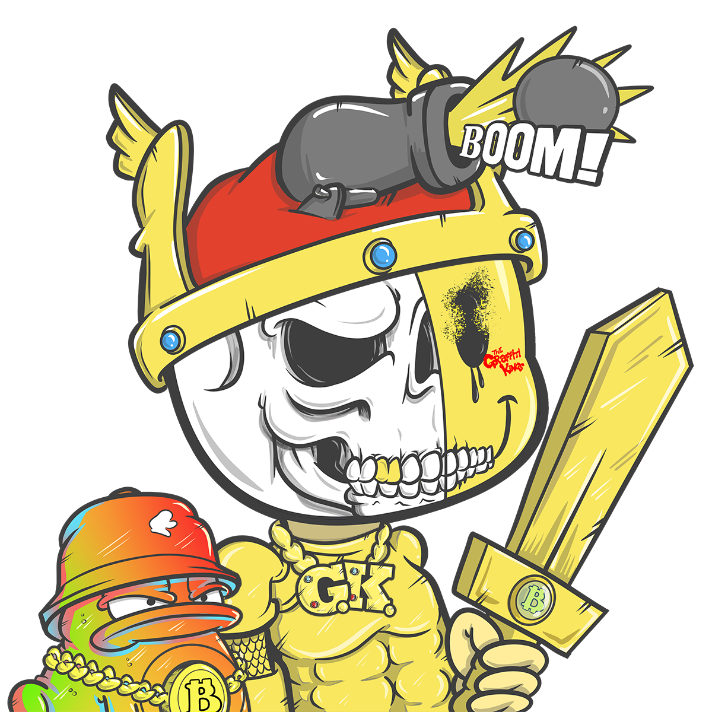

CHARACTER DIRECTORY
W81 canon character index for the Graffiti Kings / GKniftyHEADS / Crypto Moonboys universe.
Purpose of this Directory
This page is the public character gateway for the wiki. It is not a short list of names. Each character page is intended to become a full lore entry explaining the character's role, signal, visual identity, faction relationship, archive function, and canon boundaries.
The W81 archive treats characters as more than mascots. A character may be a real-root figure, a faction operator, a prophet, a street myth, a Grid-side system worker, a Moongirl, a Chain Scribe, a hardline antagonist, or a holder-facing symbol. The directory groups those roles without pretending every page is finished to the same depth yet.
Real-Root Figures
Core Lore Figures
Bitcoin Kid Army youth-myth and HODL signal.
Archive warning figure and faction-neutral system prophet.
Chain Scribe and Grid Archive keeper.
City Block Topia ruler signal and Crypto Moongirls icon.
Rogue Moongirl, cloning vats and Echo Ink scars.
Street, Ink and Speed Figures
System, Fork and Code Figures
Token cap, mechanic logic and hard numerical signal.
Fork-energy figure and split-chain mythology.
Mint danger, exploit pressure and NFT-system warning.
Bitcoin rebel signal and monetary sovereignty energy.
Builder figure and structural world logic.
Numerical tag signal and coded graffiti system.
Systems hacker, interface builder and Grid-side operator.
Newly Expanded Character Pages
Anti-graffiti erasure force and archive enemy signal.
Rough street resistance and punk-graffiti pressure.
Fire-coded destructive and transformative signal.
Looped-time, repeating signal and pattern trap figure.
Executable threat, digital demon and corrupted code energy.
Fork identity and holder-facing split-path mythology.
Pacifier signal, quiet resistance and control interruption.
Peace-coded figure, soft power and calm-after-conflict myth.
Numeric grit variant and hardened archive persona.
Symbolic writing, coded marks and ancient tag signal.
Fractured archive repair and stitched memory figure.
Royal-coded city myth and symbolic heir figure.
Old-world operator and hardline tactical pressure.
Grid-side intelligence and systems access builder.
Expansion Standard
Every character page should be treated as a long-form wiki article, not a short trading-card note. The correct standard is: overview, archive role, visual language, faction or system function, story use, and canon boundaries. If the archive does not support a claim, it should not be written as fact.
Future additions should use W81 language and official collection metadata first. New lore may be added only when it fits the existing Graffiti Kings / GKniftyHEADS / Crypto Moonboys framework and does not overwrite the archive root.